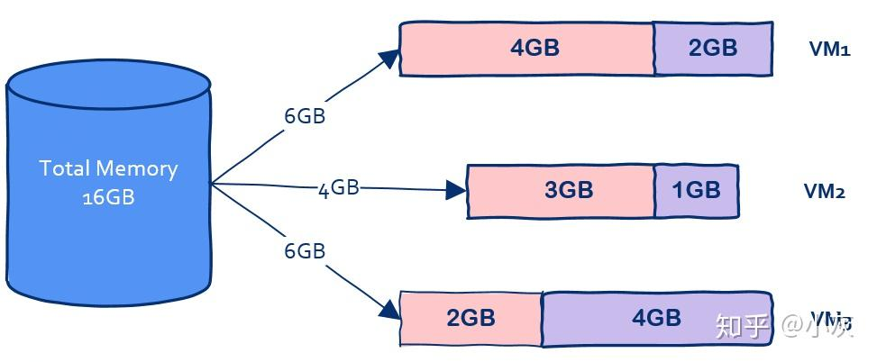

Docker¶
什么是容器技术¶
Docker是一种容器技术。与虚拟机通过操作系统实现隔离不同，容器技术只隔离应用程序的运行时环境但容器之间可以共享同一个操作系统，这里的运行时环境指的是程序运行依赖的各种库以及配置。与虚拟机动辄数G的内存占用相比，容器技术只需要数M的空间，因此可以在同样规格的硬件上大量部署容器。

容器技术 VS VM
与虚拟机相比，容器技术能够避免多次划分虚拟机时为其分配操作系统所需的内存所导致的内存浪费，也可以避免启动虚拟机时加载操作系统所需的时间开销1。也就是说，容器技术比虚拟机更轻量且占用的资源更少，启动时间更快。

什么是Docker?¶
Docker是一个用Go语言实现的开源项目，可以让我们方便地创建和使用容器。Docker将程序以及程序所有的依赖都打包到docker container，这样程序在任何环境中都会表现一致。所以，Docker的作用是可以屏蔽环境，确保程序无论运行在什么环境下都表现一致，真正实现“Build one, run everywhere”。
注意
这里所说的BORE其实并不是真正意义上的BORE。Docker只打包了用户空间的系统调用，执行系统调用的地方依然是宿主的内核，也就是说你打包的系统调用在新的内核上执行时可能会发生错误。要实现BORE，还必须使用同样的内核，而那样的话，就跟使用虚拟机没有太大的差别了。总之，难以做到开发、测试、运维只要用同一个镜像就能表现完全一致。
Docker的作用¶
Docker 的主要用途，目前有三大类2。
（1）提供一次性的环境。比如，本地测试他人的软件、持续集成的时候提供单元测试和构建的环境。
（2）提供弹性的云服务。因为 Docker 容器可以随开随关，很适合动态扩容和缩容。
（3）组建微服务架构。通过多个容器，一台机器可以跑多个服务，因此在本机就可以模拟出微服务架构。
Docker架构¶

使用¶
Docker中有三个重要的概念：
-
dockfile
-
image：Docker把应用程序及其依赖，打包在image文件里面。只有通过这个文件，才能生成Docker容器。image文件可以看作是容器的模板。Docker根据 image文件生成容器的实例。同一个image文件，可以生成多个同时运行的容器实例。
-
container：运行程序的容器。
docker build¶
docker run¶
从指定的镜像创建并启动一个新容器。docker run是一个语法糖，是docker create和docker start的复合语句。
docker run --name test -idt continuumio/anaconda3
参数-name指定了容器的名称，若不指定则docker会为容器分配一个容器ID。continuumio/anaconda3是镜像文件的名称。-i表示保持标准输入打开，这允许用户将来与容器的命令行进行交互；若没有-i则容器无法接收用户的输入。-t (--detach) 表示使容器在后台执行，不会占用当前的命令行窗口。-t表示为Docker容器分配一个终端命令行，这样用户就可以获得一个类似SSH的完整交互式Shell体验。
docker pull¶
从镜像库里拉取image。
docker images¶
列出本机的所有镜像文件。
docker ps¶
列出本机中正在运行的docker容器。ps来自于linux中的ps (process status)。
可以使用参数-a来列出本机中所有的docker容器，包括已停止的、退出的、正在运行的等等。
docker load¶
docker load -i <imageName>.tar。-i是——input。
docker save¶
可以使用镜像名称保存（TAG是可选项）：docker save -o <imageName>.tar <REPOSITORY>:<TAG>。-o是-output。
也可以使用镜像ID保存：docker save -o <imageID>。
Examples¶
打包conda环境¶
耐心
打包环境的过程中有些步骤非常耗时，这是正常现象，请耐心等待。
- 拉取镜像
通过docker pull continuumio/anaconda3命令从远程镜像库中拉取镜像。
- 用continuumio/anaconda3镜像创建一个容器
在第一步拉取镜像后，我们只是获得了一个带有空白conda环境的系统。想要打包host中的conda环境，我们需要在基础镜像的容器里做修改，然后将修改后的容器保存为镜像。
通过docker run --name <containerName> -idt continuumio/anaconda3命令，我们启动了一个在后台运行的容器，想要进入该容器，可以使用docker exec -it <containerName> /bin/bash命令，进入容器后可以使用快捷键ctrl+d退出容器，该快捷键命令不会停止容器运行。在容器内部，可以通过conda info --envs命令来查看conda的路径。
- 在本地环境中将本地环境复制到docker容器中
在本地环境中，通过命令docker cp /z3/home/.conda/envs/yanbo_pytorch <containerName>:/opt/conda/envs将本地环境复制到docker环境中。复制完conda环境后，可以再次进入容器中查看conda环境是否复制成功。复制本地的代码也是同理，代码可以放在容器中的/root.目录下。
- 将容器保存为镜像
在本地环境中执行命令docker commit -a <authorName> -m <message> <containerName> <imageName>，将容器保存为镜像。保存完毕后，可以通过docker images来查看保存是否成功。
- 将镜像保存为压缩包
可以先cd到保存目录，然后执行命令docker save -o <fileName>.tar <imageName>。
- 在新机器上读取镜像
在新机器上可以通过命令docker load -i <fileName>.tar加载镜像。